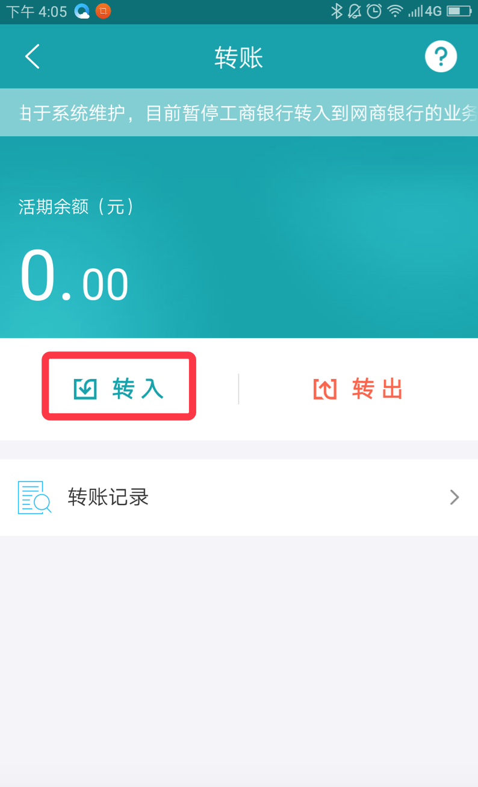

解决支付宝的限额问题
通过网商银行跨行转账的好处：
- 1.跨行转账（只限本人）通过网商银行零手续费，实时到账。
- 2.交易额度大（单笔5万）。
准备工作：
- 1.准备好要转账的银行卡（最好是网商银行建议绑定的银行：工行、农行、中行、建行、交行、平安、民生、浦发、兴业、光大），并且将该银行卡的转账限额提高到最大（单笔转账额度，日转账额度，跨行单笔转账额度，跨行日转账额度）。不同的银行卡转账额度提高规定不同，大部份银行卡提升额度需要到银行柜台去申请。
- 2.支付宝账号，并通过实名认证。
- 3.通过支付宝下载并注册（浙江）网商银行APP。
- 4.通过支付宝账户登录网商银行。
付款限额操作步骤：
- 1.登录网商银行APP。选择转账，转入。

- 2.选择扣款账户，也就是在网商银行中绑定的银行卡。输入转入付款金额（由于网商银行单笔限额为5万，如果付款金额大于5万，则需要多转入几次），点击确认。
- 3.再通过网商银行将付款金额转出，将网商银行的活期余额转出至支付宝余额，选择到账账户（网商银行关联的支付宝账号）
- 4.进入支付宝，将余额中的付款金额转入到余额宝中，选择付款方式为（账户余额）。
- 5.交易：输入对方的支付宝账户，将付款金额通过选余额宝付给对方。
提现限额操作步骤：
- 1.通过支付宝交易之后，交易金额都在余额中。
- 2.登录网商银行，选择转入，选择扣款账户支付宝（网商银行关联的支付宝账号），输入交易金额，点击确定。
- 3.再通过网商银行将交易金额转出（单笔限额为5万，如果交易金额大于5万，则需要多转出几次）。